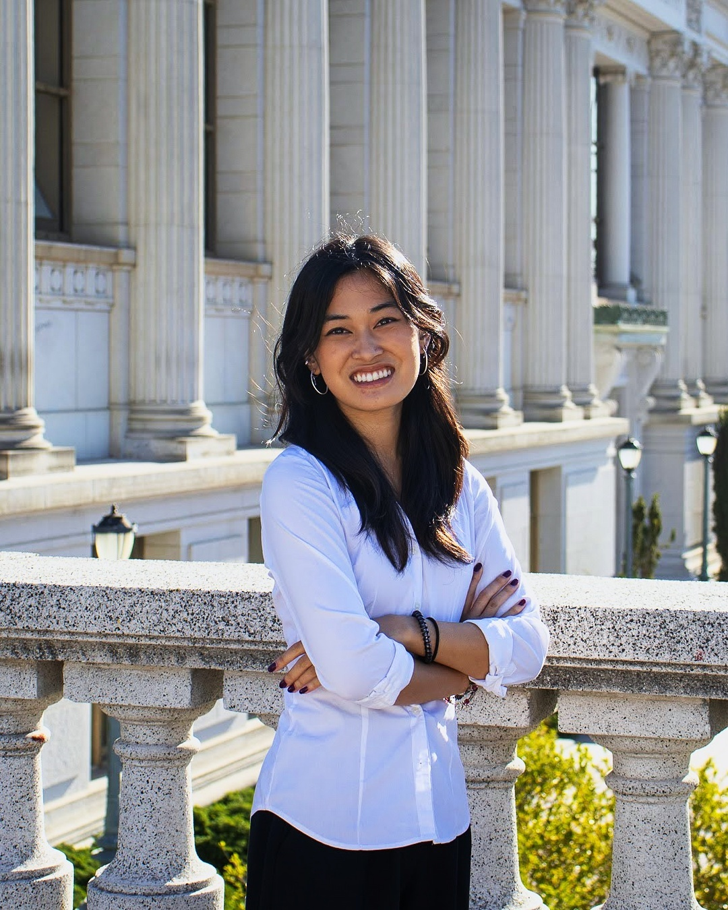

Electrical engineering · UC Berkeley
Hi, I'm Isa.
I'm an Electrical Engineering and Computer Science student at UC Berkeley. I work on PCBs, instrumentation, and hardware systems, especially where careful testing matters.
Recently, that's meant power electronics for semiconductor inspection, EUV measurement hardware, and an RF system for research.

Selected projects
Things I’ve worked on
Power electronics for semiconductor inspection
Evaluation hardware for the high-power DC-DC converters behind semiconductor inspection camera systems.
View projectInstrumentation for EUV systems
Measurement boards and automated hardware for extreme ultraviolet tools.
View projectCustom RF generator for ion guide control
A custom RF system for quadrupole ion guide control in charge detection mass spectrometry.
View projectRISC-V processor, from RTL to layout
A three-stage pipelined RISC-V processor targeting the SkyWater 130 nm process.
View projectAbout me
Curious across disciplines
I like working from a circuit or system diagram through to a tested build. Along the way I’ve also learned a lot from leading teams, writing technical documentation, and making time for creative work outside engineering.
Earlier, I led Geneseas, an all-female underwater robotics team of 25. We won first place overall at the 2023 MATE ROV World Championships and first place in technical documentation in 2024.
Outside engineering
Photography & music
A small place for favorite albums and playlists. I'll add my picks here later.